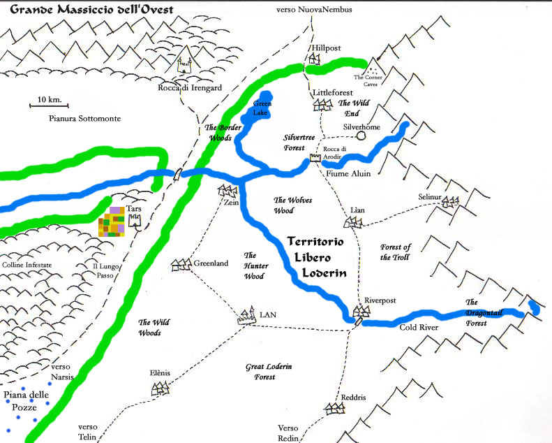

Il Territorio Libero Loderin comprende tutta la parte della Foresta Elfica a nord del Fiume Impetuoso e del Fiume Tidar. L'estensione della Foresta Loderin è di gran lunga superiore rispetto a quella Erlin, in compenso la densità di popolazione elfica è molto minore. Per la relativa esiguità della popolazione elfica diffusa in una vasta foresta e per la costante volontà degli elfi di non intaccare l'habitat naturale (tranne in casi particolarmente gravi) molte zone della foresta sono ancora selvagge e popolate da creature ostili. Mentre, infatti, i sentieri elfici e le comunità con i loro boschi limitrofi sono costantemente sotto controllo e relativamente sicuri, le zone più interne di foresta sono utilizzate solo dai cacciatori e sostanzialmente prive di civilizzazione.
La Foresta Loderin, date le sue dimensioni, è suddivisa in varie zone, ognuna delle quali presenta particolari caratteristiche di flora e di fauna.
Great Loderin Forest : E' la più grande parte della foresta che si estende a sud-est del sentiero che va da Telin a Riverpost. Trattandosi della più estesa zona di foresta è ancora selvaggia e popolata principalmente da animali, alcuni dei quali feroci (orsi e puma di foresta). E' sconsigliata a viaggiatori alle prime armi.
The Wild Woods : Prende questo nome la zona di foresta ad ovest del sentiero che va da Telin fino a Zein. Essendo la zona di confine della foresta elfica è spesso invasa da gruppi di umanoidi dalla Piana delle Pozze e dalle Colline Infestate che penetrano nella foresta per cacciare o raccogliere cibo, questa circostanza rende questa parte di foresta particolarmente pericolosa.
The Hunter Wood : E' la zona di foresta Loderin più popolata e frequentata. In particolari cacciatori, erbalisti e raccoglitori di legnatico si recano in questa zona. Inoltre molti elfi Loderin che non vivono nelle comunità posseggono in questi boschi le loro dimore. Questa zona di foresta si estende a nord dei sentieri che vanno da Zein a Riverpost ed è delimitata a nord dal fiume Cold River.
The Dragontail Forest : Questa zona di foresta inaccessibile che si insinua nella gola montuosa che conduce alla sorgente del fiume Cold River è estremamente selvaggia. Gli elfi la evitano anche in quanto è l'unica zona della foresta elfica nella quale è ancora possibile incontrare (sebbene sia raro) i temibili draghi verdi che originariamente spadroneggiavano in tutta la foresta elfica.
Forest of The Troll : Questa grossa zona della foresta elfica che si estende a est del sentiero che va da Riverpost alla Rocca di Arodir prende il nome delle creature che originariamente la abitavano. Sebbene i temibili trolls siano stati sconfitti, piccoli gruppi e tribù di queste creature malvagie sono ancora presenti in questa parte di foresta, in special modo alle pendici dei monti Roar.
The Wolves Wood : Questa zona di foresta si estende ad ovest del sentiero che va da Riverpost alla Rocca di Arodir. In questa parte di boschi continuano a vivere piccole comunità di goblin (la foresta prende il nome dai lupi che queste creature addestrano e che in questa parte di foresta sono particolarmente numerosi), per questo motivo nonostante la presenza elfica sia comune (in particolare cacciatori e giovani avventurieri) i normali abitanti Loderin preferiscono non addentrarsi troppo al suo interno.
THE OPEN FOREST
E' la parte di foresta elfica a nord del fiume Aluin, sotto il controllo del clan Silvertree. In questa parte di foresta è concesso anche a chi non sia un elfo e un mezzelfo di entrare. Queste persone devono effettuare richiesta presso il presidio Loderin di Hillpost, se ottengono il gradimento riceveranno (dietro il pagamento di 10 querce) la cosiddetta Foglia del Benvenuto, ossia un amuleto di rame a forma di foglia d'edera, chi possiede tale simbolo può liberamente recarsi nella Open Forest (non ha una durata definita ma può essere revocato in ogni momento). Infine, solo le persone che sono insigniti del titolo di Amici del Popolo Elfico (il quale rappresenta la più importante onorificenza che una persona appartenente ad un'altra razza possa ricevere per aver dimostrato grande amicizia nei confronti degli elfi) hanno il permesso di comprare una dimora in questa zona di foresta e risiedervi stabilmente. Anche l'Open Forest, date le dimensioni relativamente grandi, si divide in tre zone.
Silvertree Forest : Questa parte della foresta a nord del Fiume Aluin si estende a sud del sentiero per Silverhome e raggiunge a ovest il Green Lake. Questa zona di foresta può essere definita la più controllata di tutta la foresta elfica, la presenza di umani ed halfling impone agli elfi un controllo del territorio inusuale. Infatti, gli umani che ottengono il permesso e molti mezzi-elfi sono soliti costruire in questa zona le loro dimore.
The Border Woods : Prende questo nome la zona di confine della foresta elfica a nord del Fiume Aluin ed ad ovest del Green Lake. Nella zona ovest del lago dimorano alcune comunità di coboldi e spesso cacciatori di frodo umani sono soliti entrare in questa zona. Avventurieri elfi alle prime armi sono soliti recarsi in questa zona per fare esperienza ed allenarsi ad esplorare zone selvagge.
The Wild End : La parte più a nord di tutta la foresta elfica è una zona che si estende ad est e a nord-est di Littleforest. Poiché le risorse del clan Silvertree sono rivolte a controllare la parte della foresta a sud di Littleforest, in questa zona sono presenti umanoidi che scendendo dai monti a volte vi si inoltrano al fine di cacciare.